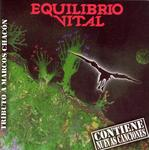

| Artist: | Equilibrio Vital |
| Title: | Equilibrio Vital |
| Label: | Musea FGBG 4457.AR |
| Length(s): | 46 minutes |
| Year(s) of release: | 1983/2003 |
| Month of review: | [12/2003] |
| 1) | Guerra | 10.56 |
| 2) | El Emigrante | 4.38 |
| 3) | Aliento Y Esperanza | 6.53 |
| 4) | A Mi Padre | 4.56 |
| 5) | Armonias Con El Infinito | 4.39 |
| 6) | Madre | 4.17 |
| 7) | Momentos | 3.54 |
| 8) | A Mis Amigos | 6.21 |
El Emigrante features harmony singing, with Elena Prieto adding her voice to the one of the main vocalist. One of the drawbacks of the recording is that the voices sound quite harsh and sharp. The song is a rather catchy up-tempo affair with a good vocal melody and a fine flow. But the vocals make it come over rather roughly. Thinking of this album as a live album does help in that sense.
Aliento Y Esperanza is a ballad, with gentle oocasional guitar playing. A bit of a laid back track, but the vocal melodies are well taken care off. I hear some crackling in the sound on this song. Halfway, the pace sets in, the vocals hastening, the flute going just as fast. Tull is then not far off. The closing section is on the bombastic side.
A Mi Padre is again strong songmaterial, with powerful chords and good vocal melodies. It breathes a kind of epic "we shall overcome" feel with a strong emotional vocal presentation and bluesy guitar playing. Do I hear a record playing here? Was this recorded from vinyl? Halfway, the song becomes more upbeat and Elena comes in for some nice vocal harmony work to complement the other vocals.
Armonias Con El Infinito is a catchy up-tempo piece dominated by guitar. The vocals do not go any further than la-la-la on this one. Madre is no bound to be such a track, in fact we have returned to the ballad side of the band. The sophisticated vocal melodies and subtle acoustic guitar strumming make this another worthy song.
Momentos is a slow moving track, with washes of cymbals, spaceous guitar work and a catchy chorus. A Mis Amigos is a more mellow track, again with a distinctive vocal melody. The up-tempo rock owes maybe more to Bruce Springsteen's E Street band, especially when the sax sets in.